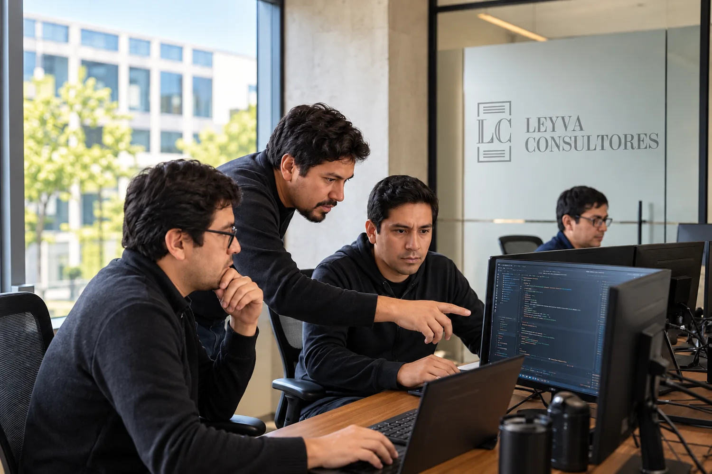

01 /
Software a medida
Plataformas diseñadas para las actividades, los usuarios y las necesidades de tu organización.
Consultar
SENKU SOFTWARE · ALIADO ESTRATÉGICO
Software a medida, automatización y datos. Creamos herramientas digitales alrededor de tus procesos para que tu equipo pueda concentrarse en lo que hace mejor.

TECNOLOGÍA CON PROPÓSITO
Desarrollamos a partir de lo que tu empresa necesita hacer, conectar y mejorar.
Plataformas diseñadas para las actividades, los usuarios y las necesidades de tu organización.
ConsultarFlujos de aprobación, alertas, reportes y asistentes que ayudan a reducir tareas repetitivas.
ConsultarDashboards y reportes para convertir la información de tu operación en decisiones.
ConsultarSitios corporativos con una experiencia clara, diseño adaptable y estructura orientada a búsquedas.
ConsultarOrganización de documentos, versiones, permisos y trazabilidad para sistemas de gestión.
ConsultarSoluciones accesibles y acompañamiento en mantenimiento y actualizaciones según tu proyecto.
ConsultarLEYVA CONSULTORES × SENKU SOFTWARE
La experiencia en gestión de Leyva y el desarrollo tecnológico de Senku se complementan para conectar estrategia, personas y herramientas.
Desde plataformas de gestión hasta automatización y analítica: el proyecto comienza por comprender cómo trabaja tu empresa.
Hablemos de tecnologíaEQUIPO SENKU
Senku Software
Product Manager
Senku Software
Lead Developer
Senku Software
Diseño UI/UX
ANTES DE EMPEZAR
Comenzamos por entender tus procesos y necesidades. Luego definimos el alcance, diseñamos la solución y organizamos el desarrollo, las pruebas y la capacitación.
Evaluamos las posibilidades de integración con tus herramientas, como ERP, CRM o plataformas de gestión documental. La viabilidad y el alcance se revisan en cada proyecto.
Sí. Coordinamos el soporte, las actualizaciones y el mantenimiento según las condiciones y el alcance de tu proyecto.
EL SIGUIENTE PASO
Cuéntanos qué necesita tu empresa. Te ayudamos a definir por dónde empezar.
+51 969 200 366 ↗comercial@lc.com.pe ↗Jirón Apurímac 292 · Cercado de Lima, Perú